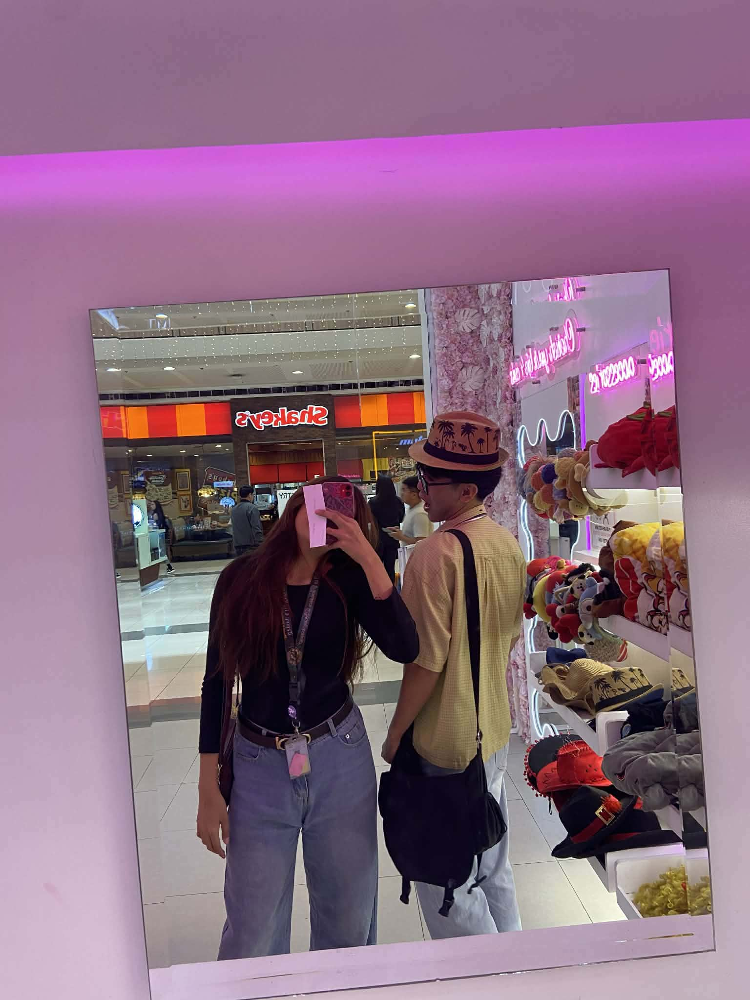
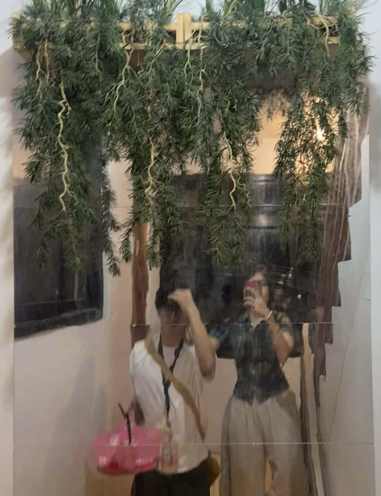
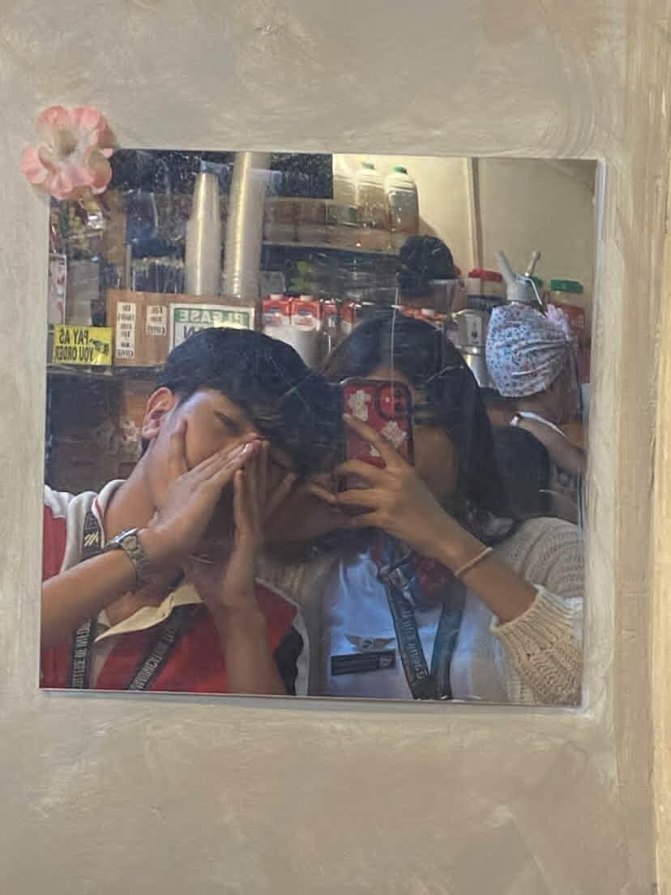
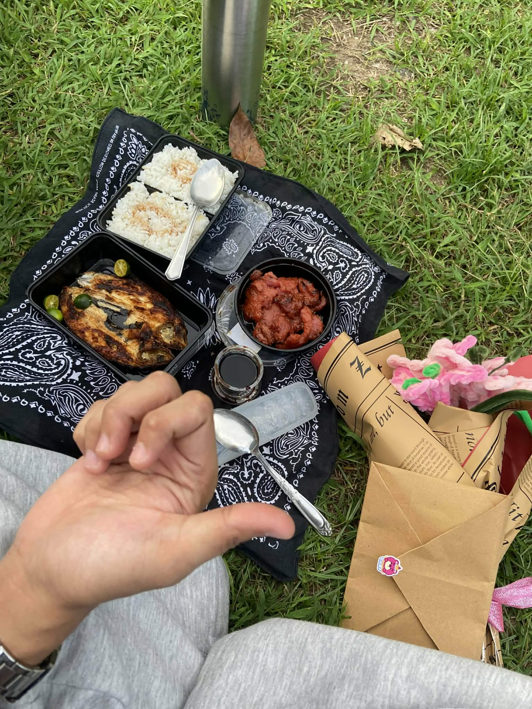
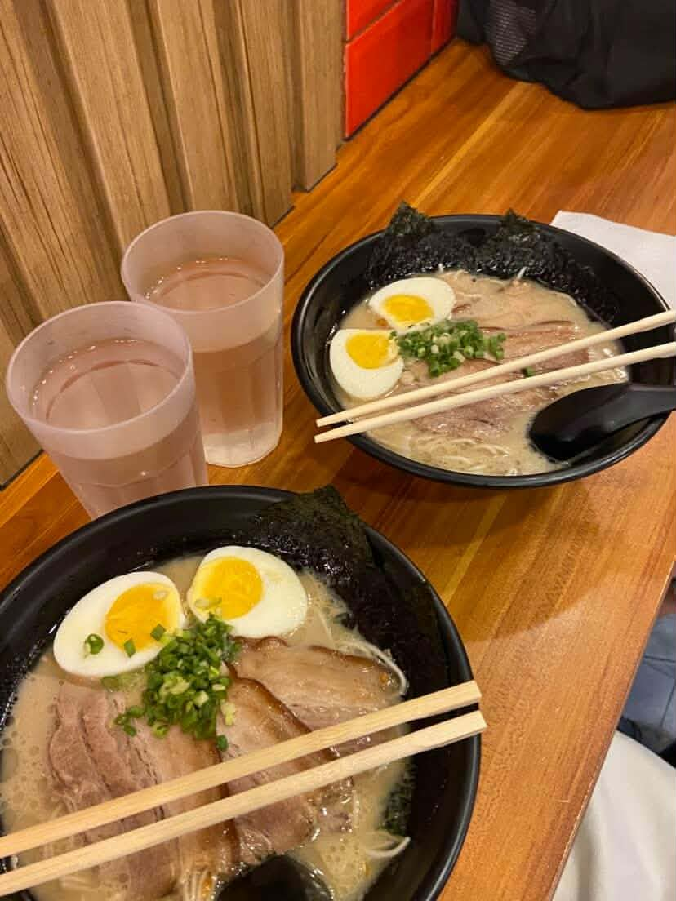
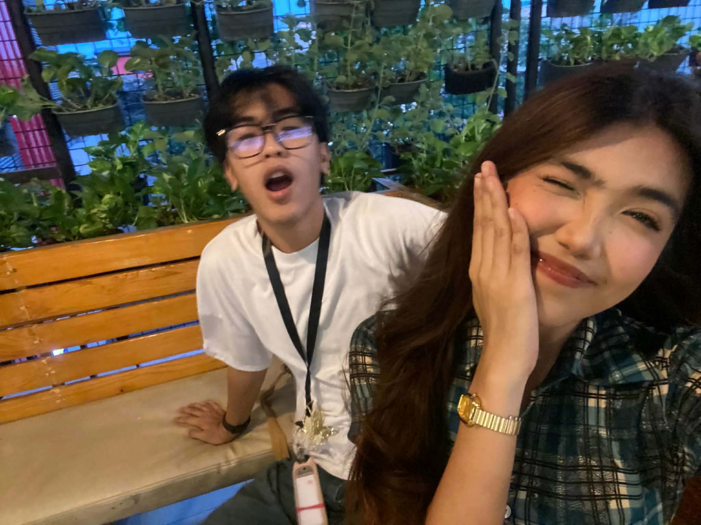
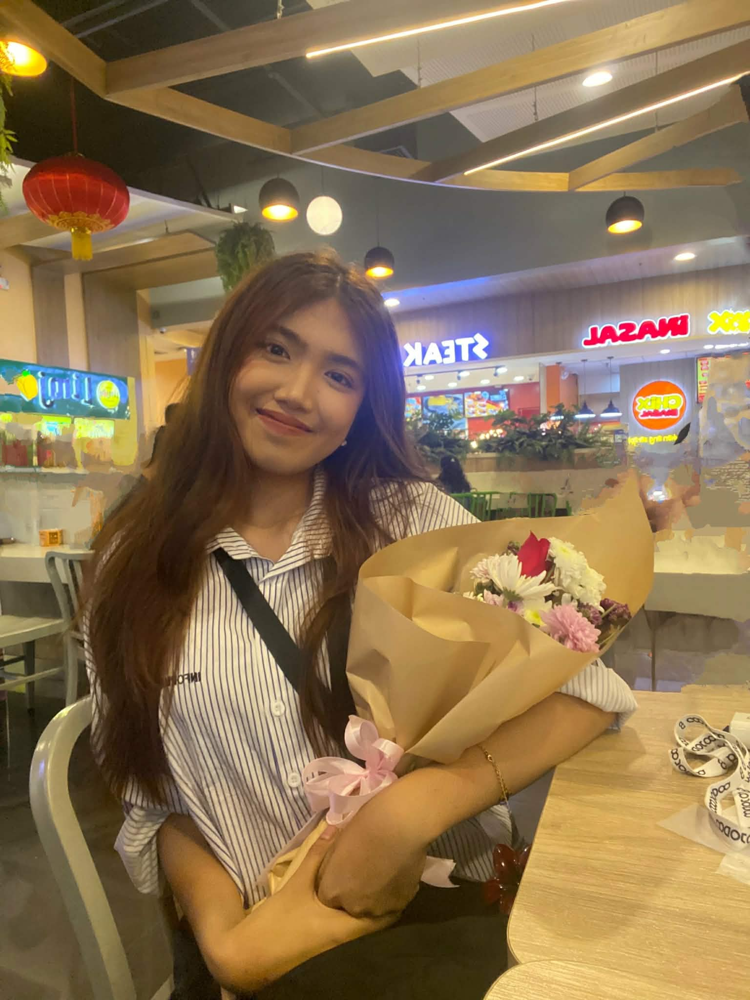
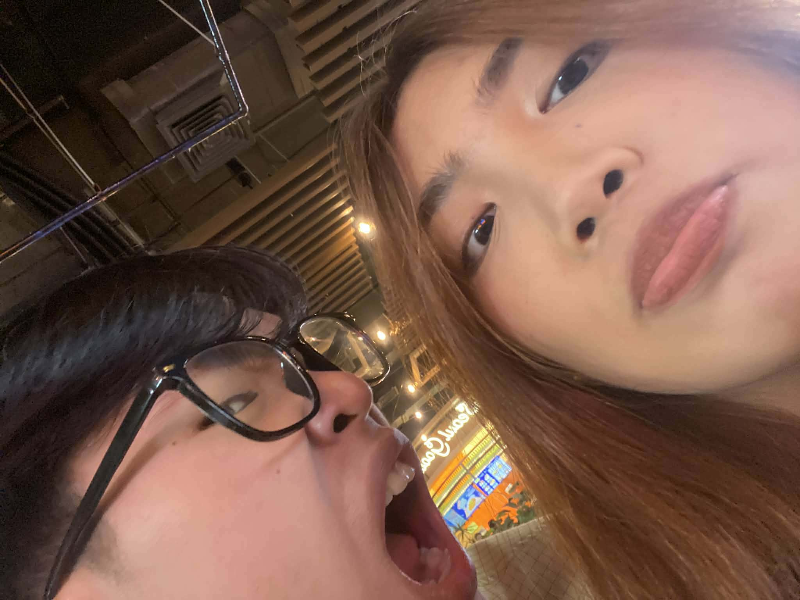
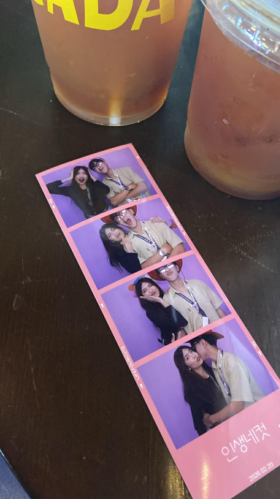

A Gallery of Us
Moments I carry with me forever









Moving Memories
Tap to play
Home
You made me the Happiest
Where it all began
For you.
Before I start, i just want to say sorry for bothering you again. I guess I've reached the point where I can no longer keep all of these thoughts to myself. I just couldn't bear to let everything end without saying the words I never got the chance to tell you, with all honesty this time. I'm not expecting a reply or anything from you.
It's been a week since you decided to end things between us, and honestly, it has become one of the darkest moments of my life. Not only because I lost someone who meant so much to me, but because it felt like a part of me died that day. I saw a future with you, Nicolai. I truly did. Maybe that's why this hurts so much. In a way, this pain feels even heavier than the day I found out I was colorblind and realized I could never pursue my dream of becoming a pilot.
Since the day you left, I've been struggling every single day. I've neglected myself, doing harmful things to at least numb the pain in my heart but none of it works. It feels like I've lost my dreams in this lifetime, twice.
I'm sorry, Nicolai. Even now, I still find myself blaming only myself for losing you. Sometimes I wonder if things would have been different if I hadn't been so slow. Maybe if I had handled everything differently, you wouldn't have left. I'm sorry for my actions and for the mistakes I made along the way. Yes, Nicolai, hindi naging tayo and that was the biggest regrets I've ever had in my life - Na sakin na pinakawalan ko pa, na sana nagmadali agad ako. That's why valid lahat ng nararamdaman mo and also yung mga naging actions mo. Kaya kahit pa anong effort yung gawin ko, Kahit masaktan pa tayo both, it will not change the fact that still wala tayong karapatan sa isa't isa.
But I also want you to know this – I loved you unconditionally. Maybe not always in the right way. Maybe not in the way you wanted or needed. But I loved you sincerely. I gave everything I had because I believed in us. I know may naging pagkukulang ako, and I know I wasn't perfect, but I truly made my best to make you stay. to become better for the sake of what we had. All I ever wanted was for us to grow together and reach the next chapter of our lives with you by my side. All I ever wanted was to finish this college with you by my side. Build a future with you by my side. All I ever wanted was to be with you.
I'm sorry if sobrang kulit ko when it comes to you. I'm sorry if I seemed selfish at times. The truth is, I was just afraid of losing you, but now, I lost you. And it hurts like hell. I know I'm no longer in a position to say these things, but for one last time, I want you to know this: Mahal na mahal kita, Nicolai. Totoong minahal kita, sobra at buong buo.
And for what it's worth, I'm not mad at you. I'm not mad about your decisions or the choices you've made. Despite everything, I still can't bring myself to hate you. We all have our reasons, and I choose to respect yours.
I still hope that someday we'll have the chance to talk in person finally have the conversation we never got to have.
I will forever care about you. Please be the happiest person you can be.
With all my heart and Sincerity,
Ben/Jb
No matter where life takes us, a part of me will always believe that somehow, someday, we'll find our way back to each other.